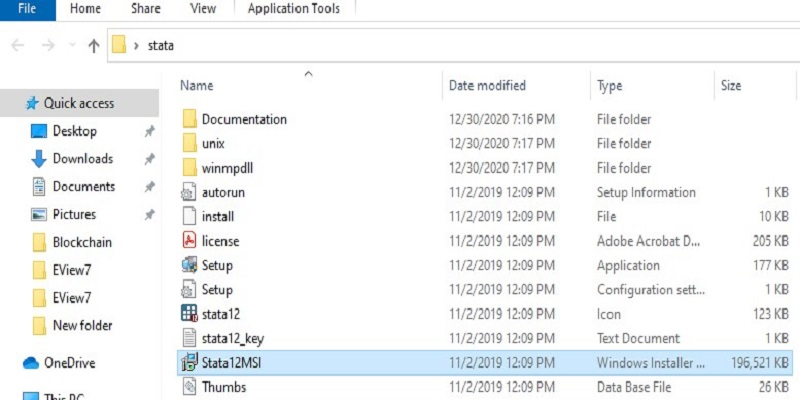
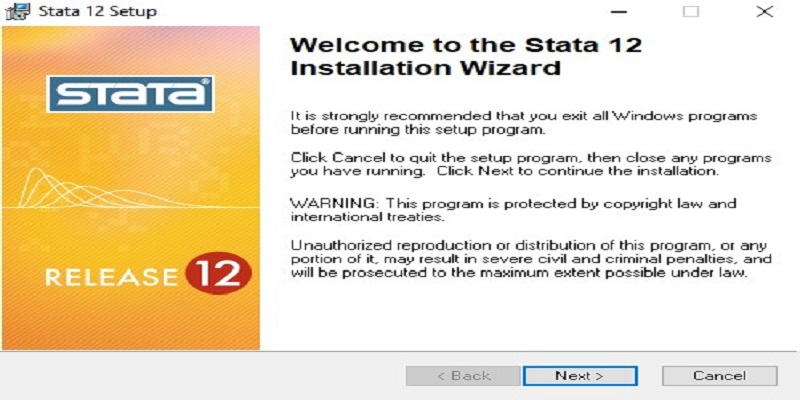
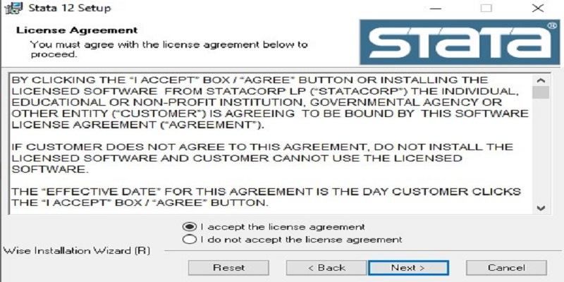
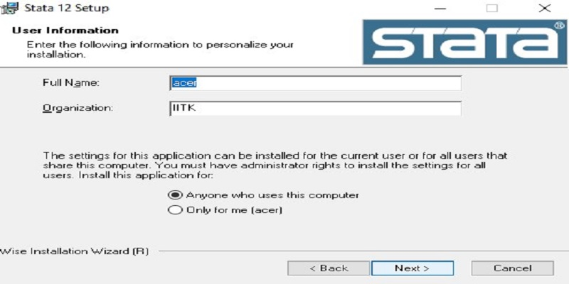
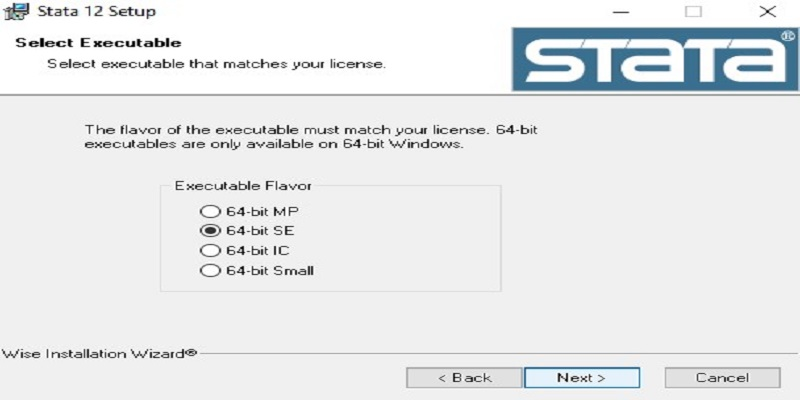
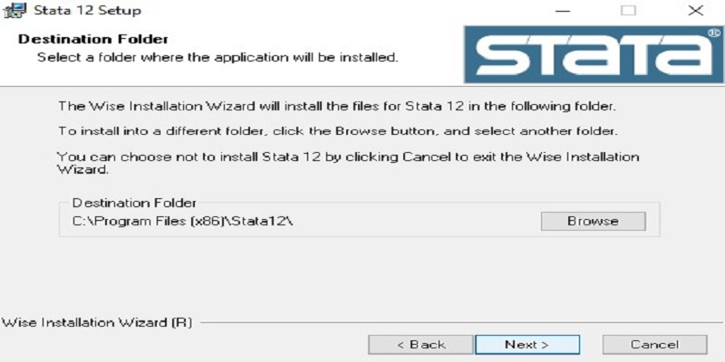
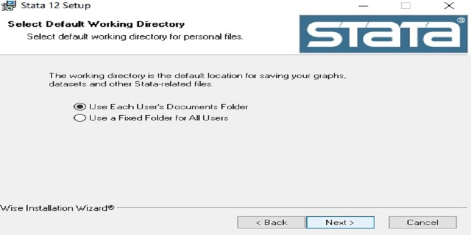
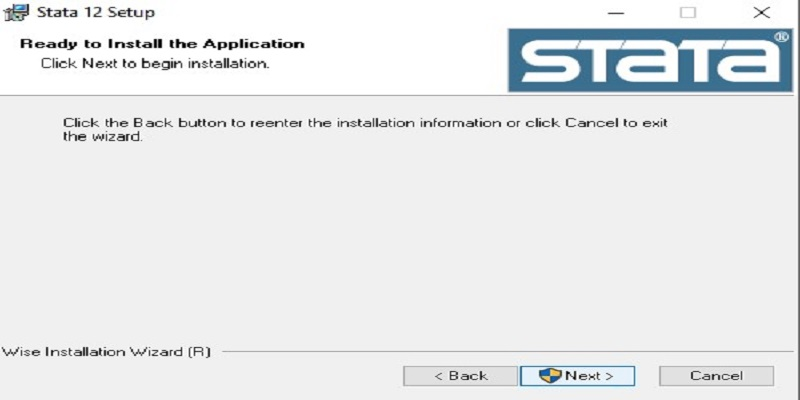
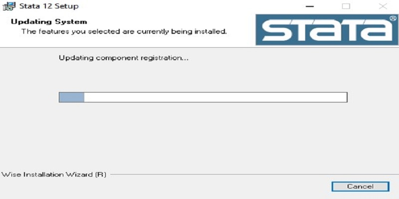
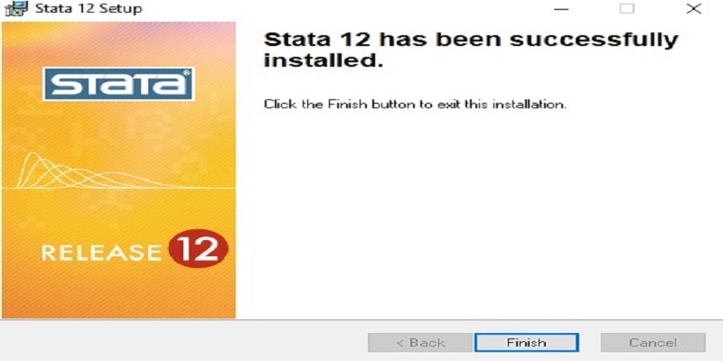

Here the procedure explains how to install StataSE 12 in windows operating system.
- Firstly your have the state setup file.
- Run the setup file of stata 12MSI

- In welcome to the Stata 12 Installation Wizard Click on Next.

- In License Agreement you mus agree with the license agreement below to proceed. So Select "I accept the license agreement" then click on Next.

- User Information Enter the 'Full Name' and 'Organization' select Anyone who uses this computer after Anyone who uses this computer after that click on 'next'.

- Select Executable Flavor 64-bit SE then Click on 'Next'.

- Select Destination Folder then click on 'Next'

- Select Default Working Directory and Then Click on 'Next'

- Then Ready to Install the Application and click on 'Next.

- Here the feaurtes you selected are currently being installed and updation system.

- Successfully Stata 12 has been installed then click Finish.
